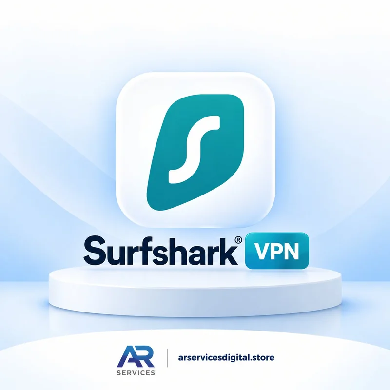

Surfshark VPN in Pakistan — How It Works, An Honest Guide (2026)

Pakistan mein VPN ab "extra cheez" nahi raha — kabhi koi website band, kabhi koi app nahi khulti, aur kabhi bas apni privacy ka khayal. Lekin VPN lete hi ek aur sawal khara ho jata hai: "Ye theek chale ga bhi ya nahi?" Ye guide Surfshark ke baare mein woh sab kuch hai jo hum apne customers ko roz WhatsApp par samjhate hain — seedha aur honest, achi baaton ke saath woh batain bhi jo aam tor par bechna wala nahi batata. Qeemat ki tafseel ke liye Surfshark price guide dekhein; yahan sirf "kaise kaam karta hai" par baat hogi. Aur agar aap ko pehle ye samajhna hai ke VPN hota kya hai, to hamari VPN beginner guide se shuru karein.
Surfshark Kaam Kaise Karta Hai? — Code Login
Surfshark ka tareeqa baqi VPNs se thora mukhtalif aur asaan hai. Aap ko lambi email-password ki jhanjhat nahi parti:
- Apne phone, laptop ya TV par Surfshark app download karein.
- App khol kar "Log in with code" wala option chunein — screen par ek code nazar aye ga.
- Woh code hamein WhatsApp par bhejein ya hamari di hui hidayat ke mutabiq darj karein — aap ka account us device par active ho jata hai.
- Server location chunein aur Connect dabayein — bas, VPN chal para.
Sab se achi baat: ek hi plan par unlimited devices — phone, laptop, tablet, TV, ghar walon ke devices — sab ek saath chal sakte hain. Pakistan mein ziada tar customers United States (US) location istemal karte hain, kyun ke ziada tar blocked cheezain aur streaming content US location par khul jata hai.
Honest Baat: Broadband vs Mobile Data
Ye woh hissa hai jo hum har customer ko pehle din wazeh karte hain, taake baad mein koi hairani na ho:
| Connection | Tajurba | Note |
|---|---|---|
| WiFi / Broadband (DSL, fiber) | ✔ Behtar aur stable | Surfshark aam tor par broadband par theek chalta hai — yehi recommended tareeqa hai |
| Mobile data (3G/4G) | ⚠ Slow ya disconnect ho sakta hai | Pakistan mein mobile networks par VPN restrictions ki wajah se speed kam ya connection ruk ruk kar ho sakta hai — ye sirf Surfshark ka masla nahi, taqreeban har VPN ka hai |
Yani agar aap ka main istemal ghar ke WiFi par hai, to tajurba acha rahe ga. Agar aap sirf mobile data par hain, to kabhi kabhi location badalna ya dobara connect karna par sakta hai. Hum ye pehle is liye batate hain ke hamara usool hai: jo cheez jaisi hai, waisi batayi jaye.
Connection Slow Ho To Kya Karein?
- Location badlein: Agar ek server slow hai to koi aur US city ya qareebi location try karein — aksar masla yahin hal ho jata hai.
- NoBorders mode on karein: Surfshark ki settings mein NoBorders mode un networks ke liye bana hai jahan VPN par pabandi hoti hai.
- App dobara connect karein: Disconnect karke 10 second baad connect karein — purana session saaf ho jata hai.
- WiFi par try karein: Agar mobile data par masla hai to ek dafa broadband par check karein — farq khud nazar aye ga.
- Phir bhi masla? WhatsApp par message karein — hamari team step by step dekhti hai, aur login ka masla ho to 25 din ki warranty ke andar replacement milta hai.
Ek aur aam sawal: kya VPN istemal karna mehfooz hai? Surfshark aap ke internet traffic ko encrypt karta hai — public WiFi (cafe, university, airport) par ye khaas tor par faidemand hai, jahan aap ka data doosron ke liye khula ho sakta hai.
Streaming Aur Roz Ke Istemal Mein Surfshark
Pakistan mein Surfshark lene walon ki bari tadaad ka maqsad streaming aur band apps hote hain. TV par istemal karne walon ke liye aaram ki baat ye hai ke ek hi plan ghar ke tamam devices par chalta hai — TV par film, phone par apna kaam, laptop par office — sab ek saath, alag alag planon ke baghair. Bas ye yaad rakhein: streaming ki quality aap ke apne internet par bhi munhasir hai — jitna acha broadband, utna acha tajurba. Isi liye hum pehli dafa setup par hi location aur connection dono check karwa dete hain, taake baad mein koi hairani na ho.
🛡️ Surfshark VPN — Monthly Plans
Login with code · unlimited devices · 25-day replacement warranty
Har plan mein 25 din ki replacement warranty aur mukammal setup madad shamil hai.
Order on WhatsApp See Full Plan DetailsHow to Order — 4 Simple Steps
- Message us on WhatsApp and select your plan.
- Pay via JazzCash or EasyPaisa — 03179172511 (Title: Ali Haider).
- Send the payment screenshot on the same WhatsApp chat.
- Your login code is delivered within 10–15 minutes after payment verification (maximum 1 hour if the vendor is busy).
Why Buy from AR SERVICES?
Anyone can quote a price — support is what matters after payment. AR SERVICES provides full WhatsApp support (Mon–Sat 9am–9pm, Sun 12pm–9pm). Agar aap ka login warranty ke doran band ho jaye to woh replace hota hai — aur connection ke masail par hamari team WhatsApp par step by step madad karti hai, yehi wajah hai ke customers bar bar wapas ate hain. Read our refund policy for complete details.
Frequently Asked Questions
Does Surfshark work in Pakistan?
Yes — Surfshark generally works well in Pakistan, especially on WiFi and broadband connections. On mobile data, VPN restrictions can sometimes make it slower or disconnect — this affects almost all VPNs in Pakistan, not just Surfshark.
How do I log in to Surfshark?
Open the Surfshark app, choose "Log in with code", and use the code login we set up with you on WhatsApp. No long email and password typing is needed.
How many devices can I use on one plan?
Unlimited devices. One Surfshark plan covers your phone, laptop, tablet and TV at the same time.
What if my Surfshark stops working?
Message us on WhatsApp — we help you fix the connection step by step, and if the login itself has a problem, the 25-day replacement warranty covers you.
Final Words
Surfshark Pakistan mein un logon ke liye sahi hai jinhein ek hi plan se pure ghar ke devices cover karne hain — broadband par is ka tajurba mustahkam hai, aur warranty ki wajah se risk hamara hai, aap ka nahi. Message karein, code login chand minutes mein tayyar ho jayega.
You May Also Need
Gemini AI Pro — Rs. 250
Google AI Pro invite plan on your own account — 1 Month Rs. 250 / 2 Months Rs. 400.
View Plans →